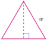
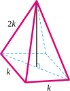

Section 6.4 Working with Radicals
Sometimes radical notation is more convenient to use than exponents. In these cases, we usually simplify radical expressions algebraically before using a calculator to obtain decimal approximations.
Subsection Properties of Radicals
Because \(\sqrt[n]{a}=a^{1/n}\text{,}\) we can use the laws of exponents to derive two important properties that are useful in working with radicals.
Product Rule for Radicals.
Quotient Rule for Radicals.
As examples, you can verify that
Caution 6.68.
In general, it is not true that \(\sqrt[n]{a+b}\) is equivalent to \(\sqrt[n]{a}+\sqrt[n]{b}\text{,}\) or that \(\sqrt[n]{a-b}\) is equivalent to \(\sqrt[n]{a}-\sqrt[n]{b}\text{.}\)
For example, you can check that
Example 6.69.
Which of the following are true?
Is \(\sqrt{36+64}= \sqrt{36}+\sqrt{64}~\text{?}\)
Is \(\sqrt[3]{8(64)}= \sqrt[3]{8}\sqrt[3]{64}~\text{?}\)
Is \(\sqrt{x^2+4}= x+2~\text{?}\)
Is \(\sqrt[3]{8x^3}= 2x~\text{?}\)
The statements in (b) and (d) are true, and both are examples of the first property of radicals.
Statements (a) and (c) are false.
Checkpoint 6.70. QuickCheck 1.
Which of the following are true?
\(\sqrt[3]{8a^3-b^3} = 2a-b~\text{?}\)
True
False
\(\sqrt[5]{x^3y^4} = \sqrt[5]{x^3}\sqrt[5]{y^4}~\text{?}\)
True
False
\(\sqrt[4]{\dfrac{1}{w^4}}=\dfrac{1}{w}\text{,}\) for \(w \gt 0~\text{?}\)
True
False
\(\sqrt{1+x^2} = 1+x~\text{?}\)
True
False
Subsection Simplifying Radicals
Each time we use a calculator to approximate a radical, we lose accuracy, and in the course of a long calculation, the error accumulates. To avoid this problem, we simplify radicals by factoring out any perfect powers from the radicand.
Example 6.71.
Simplify \(~\sqrt[3]{108}\)
We look for perfect cubes that divide evenly into \(108\text{.}\) The easiest way to do this is to try the perfect cubes in order:
and so on, until we find one that is a factor. For this example, we find that \(108 = 27 \cdot 4\text{.}\) Applying the Product Rule, we write
This expression is considered simpler than the original radical because the new radicand, \(4\text{,}\) is smaller than the original, \(108\text{.}\)
Caution 6.72.
Finding a decimal approximation for a radical is not the same as simplifying the radical. In the Example above, we can use a calculator to find
but \(4.762\) is not the exact value for \(\sqrt[3]{108}\text{.}\)
In long calculations, too much error may be introduced by approximating each radical. However, \(3 \sqrt[3]{4}\) is equal to \(\sqrt[3]{108}\text{,}\) so their values are exactly the same. We can replace one expression by the other without losing accuracy.
Checkpoint 6.73. Practice 1.
We can also simplify radicals containing variables. If the exponent on the variable is a multiple of the index, we can extract the variable from the radical. For instance,
(You can verify this by noting that \((x^4)^3 = x^{12}\text{.}\))
Caution 6.74.
Do not confuse \(\sqrt{a^{16}}\) with \(\sqrt{16}\text{.}\) Compare the two radicals:
Example 6.75.
Simplify \(~\sqrt[3]{x^{11}}\)
Because the exponent on the variable, 11, is not a multiple of the index, 3, we factor out the highest power that is a multiple.
Checkpoint 6.76. Practice 2.
Simplify \(\sqrt[4]{a^{15}}\)
\(\displaystyle 3\sqrt[4]{a^3} \)
\(\displaystyle \ a^3\sqrt[4]{a^3} \)
\(\displaystyle a\sqrt[4]{11} \)
\(\displaystyle a^{12}\sqrt[4]{a^3} \)
To simplify a root of a monomial, we factor the coefficient and each power of a variable separately.
Example 6.77.
Simplify each radical.
\(\displaystyle \sqrt{18x^5}\)
\(\displaystyle \sqrt[3]{24x^6y^8} \)
-
The index of the radical is \(2\text{,}\) so we look for perfect square factors of \(18x^5\text{.}\) The factor \(9\) is a perfect square, and \(x^4\) has an exponent divisible by \(2\text{.}\) Thus,
\begin{align*} \sqrt{18x^5} \amp = \sqrt{9x^4\cdot 2x}\amp\amp\blert{\text{Apply the Product Rule.}}\\ \amp = \sqrt{9x^4} \sqrt{2x}\amp\amp\blert{\text{Take square roots.}}\\ \amp = 3x^2\sqrt{2x} \end{align*} -
The index of the radical is \(3\text{,}\) so we look for perfect cube factors of \(24x^6 y^8\text{.}\) The factor \(8\) is a perfect cube, and \(x^6\) and \(y^6\) have exponents divisible by \(3\text{.}\) Thus,
\begin{align*} \sqrt[3]{24x^6y^8} \amp = \sqrt[3]{8x^6 y^6 \cdot 3 y^2}\amp\amp\blert{\text{Apply the Product Rule.}}\\ \amp = \sqrt[3]{8x^6 y^6} \sqrt[3]{3 y^2}\amp\amp\blert{\text{Take cube roots.}}\\ \amp = 2x^2 y^2\sqrt[3]{3y^2} \end{align*}
Checkpoint 6.78. Practice 3.
Simplify \(\sqrt[3]{250b^7}\)
\(\displaystyle 5b^2\sqrt[3]{2b} \)
\(\displaystyle \ 25b^4\sqrt[3]{2b} \)
\(\displaystyle 5b^3\sqrt[3]{10b} \)
\(\displaystyle 5b^6\sqrt[3]{10b} \)
Caution 6.79.
It is worth stating again that the Product Rule applies only to products under the radical, not to sums or differences. For example,
and
Checkpoint 6.80. QuickCheck 2.
True or false.
To simplify a radical means to find a decimal approximation.
True
False
\(\sqrt{x^{16}} = x^4\)
True
False
We cannot simplify \(\sqrt[3]{x^{10}}.\)
True
False
\(\sqrt{83^5} = 83^2\sqrt{83}\)
True
False
Subsection Sums and Differences of Radicals
How can we add or subtract radicals? Keep in mind that, in general,
We cannot add or subtract expressions that occur under a radical. For example, you can check that
However, if two roots have the same index and identical radicands, they are said to be like radicals. We can add or subtract like radicals in the same way that we add or subtract like terms, namely by adding or subtracting their coefficients. For example, we know that
where \(r\) is a variable that can stand for any real number. In particular, if \(r=\sqrt{x}\text{,}\) we have
So we may add like radicals by adding their coefficients. The same idea applies to subtraction.
Like Radicals.
To add or subtract like radicals, we add or subtract their coefficients. We do not change the index or the radicand.
Example 6.81.
\(\displaystyle 3\sqrt{3}+4\sqrt{3} = (3+4)\sqrt{3} = 7\sqrt{3}\)
\(\displaystyle 4\sqrt[3]{y}-6\sqrt[3]{y} = (4-6)\sqrt[3]{y} = -2\sqrt[3]{y}\)
Caution 6.82.
In Example 6.81a, \(3\sqrt{3}+4\sqrt{3}\ne 7\sqrt{6} \text{.}\) Only the coefficients are added; the radicand does not change.
-
Sums of radicals with different radicands or different indices cannot be combined. Thus,
\begin{align*} \sqrt{11}+\sqrt{5} \amp \ne\sqrt{16} \amp \amp \blert{\text{Radicands are not the same.}}\\ \sqrt[3]{10x}-\sqrt[3]{2x} \amp \ne\sqrt[3]{8x} \amp \amp \blert{\text{Radicands are not the same.}}\\ \sqrt[3]{7}+\sqrt{7} \amp \ne\sqrt[5]{7} \amp \amp \blert{\text{Indices are not the same.}} \end{align*}None of the expressions above can be simplified.
Checkpoint 6.83. Practice 4.
Checkpoint 6.84. QuickCheck 3.
True or false.
We combine like radicals the same way we combine like terms: by adding or subtracting their coefficients.
True
False
To add radicals with different indices, we multiply the indices.
True
False
\(3\sqrt{5}+6\sqrt{5}=9\sqrt{10}\)
True
False
Like radicals must have identical coefficients.
True
False
Sometimes we must simplify the roots in a sum or difference before we can recognize like radicals.
Example 6.85.
Simplify \(\sqrt[3]{40x^2}-3\sqrt[3]{16x^2}+\sqrt[3]{54x^2}\)
We simplify each cube root by factoring perfect cubes from the radicals.
Checkpoint 6.86. Practice 5.
Subsection Products and Quotients of Radicals
Because of the Product and Quotient Rules, we can multiply or divide radicals of the same index.
These rules tell us that for products and quotients, the radicands do not have to be the same; only the indices must match.
Example 6.87.
Simplify.
\(\displaystyle \sqrt[4]{6x^2} \sqrt[4]{8x^3}\)
\(\displaystyle \displaystyle{\frac{\sqrt[3]{16y^5}}{\sqrt[3]{y^2}}}\)
-
We apply the Product Rule to write the product as a single radical, then simplify.
\begin{align*} \sqrt[4]{6x^2} \sqrt[4]{8x^3}\amp =\sqrt[4]{48x^5}\amp\amp\blert{\text{Factor out perfect fourth powers.}} \\ \amp = \sqrt[4]{16x^4}\sqrt[4]{3x}\amp\amp\blert{\text{Simplify.}}\\ \amp = 2x \sqrt[4]{3x} \end{align*} -
We apply the Quotient Rule to write the quotient as a single radical, then reduce the fraction under the radical.
\begin{align*} \frac{\sqrt[3]{16y^5}}{\sqrt[3]{y^2}}\amp =\sqrt[3]{\frac{16y^5}{y^2}}\amp\amp\blert{\text{Reduce.}} \\ \amp = \sqrt[3]{16y^3}\amp\amp\blert{\text{Simplify: factor out perfect cubes.}}\\ \amp = \sqrt[3]{8y^3}\sqrt[3]{2} = 2y \sqrt[3]{2} \end{align*}
Checkpoint 6.88. Practice 6.
For products involving binomials, we apply the distributive law.
Example 6.89.
Expand each product.
\(\displaystyle \sqrt{3} \left(\sqrt{2x}+\sqrt{6} \right)\)
\(\displaystyle \left(\sqrt{x}-\sqrt{y} \right)\left(\sqrt{x}+\sqrt{y} \right)\)
-
We multiply each term within the parentheses by \(2\sqrt{3}\text{.}\)
\begin{align*} \alert{2\sqrt{3}}\amp \left(\sqrt{2x}+\sqrt{6} \right) =\\ \amp = \alert{2\sqrt{3}} \cdot \sqrt{2x} + \alert{2\sqrt{3}} \cdot 5\sqrt{6} \amp \amp \blert{\text{Apply the Product Rule.}}\\ \amp = \alert{2}\sqrt{\alert{3} \cdot 2x} + \alert{2} \cdot 5 \sqrt{\alert{3} \cdot 6} \amp \amp \blert{\text{Simplify the radicals.}}\\ \amp = 2\sqrt{6x}+10\sqrt{18}\\ \amp = 2\sqrt{6x}+10\cdot \sqrt{9}\sqrt{2}\\ \amp = 2\sqrt{6x}+30\sqrt{2} \end{align*} -
We use the "FOIL" method to expand the product.
\begin{align*} \left(\sqrt{x}-\sqrt{y} \right)\left(\sqrt{x}+\sqrt{y} \right) \amp = \sqrt{x}\sqrt{x}+\sqrt{x}\sqrt{y}-\sqrt{x}\sqrt{y}-\sqrt{y}\sqrt{y}\\ \amp = \sqrt{x^2}+\sqrt{xy}-\sqrt{xy}-\sqrt{y^2}\\ \amp = x-y \end{align*}
Note 6.90.
In part (a) of the Example above, observe that
We multiply together any expressions outside the radical, and apply the product rule to expressions under the radical.
Checkpoint 6.91. Practice 7.
Checkpoint 6.92. QuickCheck 3.
True or false.
We can only simplify products or quotients of like radicals.
True
False
\(4\left(3\sqrt{5}\right) = 3 \cdot 4 + 3\sqrt{5}\)
True
False
\((\sqrt{3}+\sqrt{5})^2 = 3+5=8\)
True
False
\((3\sqrt{x})^2=9x\)
True
False
Subsection Rationalizing the Denominator
It is easier to work with radicals if there are no roots in the denominators of fractions. We can use the fundamental principle of fractions to remove radicals from the denominator. This process is called rationalizing the denominator. For square roots, we multiply the numerator and denominator of the fraction by the radical in the denominator.
Example 6.93.
Rationalize the denominator of each fraction.
\(\displaystyle \displaystyle{\sqrt{\frac{1}{3}}}\)
\(\displaystyle \displaystyle{\frac{\sqrt{2}}{\sqrt{50x}} }\)
-
First, we apply the Quotient Rule to write the radical as a quotient.
\begin{align*} \sqrt{\frac{1}{3}}\amp = \frac{\sqrt{1}}{\sqrt{3}}=\frac{1}{\sqrt{3}}\amp\amp\blert{\text{Multiply numerator and denominator by } \sqrt{3}.}\\ \amp = \frac{1\cdot \alert{\sqrt{3}}}{\sqrt{3}\cdot \alert{\sqrt{3}}}\\ \amp= \frac{\sqrt{3}}{3} \end{align*} -
It is always best to simplify the denominator before rationalizing.
\begin{equation*} \dfrac{\sqrt{2}}{\sqrt{50x}} = \dfrac{\sqrt{2}}{5\sqrt{2x}} \end{equation*}Now we can see that we should multiply numerator and denominator by \(\sqrt{2x}~\)— not \(\sqrt{50x}~\text{!}\)
\begin{align*} \dfrac{\sqrt{2} \cdot \alert{\sqrt{2x}}}{5\sqrt{2x} \cdot \alert{\sqrt{2x}}} \amp = \dfrac{\sqrt{4x}}{5(2x)} \amp\amp \blert{\text{Apply the Product Rule.}}\\ \amp = \dfrac{2\sqrt{x}}{10x} = \dfrac{\sqrt{x}}{5x} \amp\amp \blert{\text{Simplify.}} \end{align*}
Checkpoint 6.94. Practice 8.
If the denominator of a fraction is a binomial in which one or both terms is a radical, we can use a special building factor to rationalize it. First, recall that
In particular, then,
The product contains no radicals. Each of the two factors \(\sqrt{b}-\sqrt{c}\) and \(\sqrt{b}+\sqrt{c}\) is said to be the conjugate of the other.
Now consider a fraction of the form
If we multiply the numerator and denominator of this fraction by the conjugate of the denominator, we get
The denominator of the fraction no longer contains any radicals—it has been rationalized.
Example 6.95.
Rationalize the denominator: \(\displaystyle{\frac{x}{\sqrt{2}+\sqrt{x}}} \text{.}\)
We multiply numerator and denominator by the conjugate of the denominator, \(\sqrt{2}-\sqrt{x} \text{.}\)
Checkpoint 6.96. Practice 9.
Checkpoint 6.97. QuickCheck 3.
Fill in the blanks.
We rationalize the denominator to remove
fractions
decimals
radicals
variables
To rationalize a binomial denominator, we multiply by its
opposite
reciprocal
conjugate
inverse
Before rationalizing, it is always best to
simplify
cross-multiply
invert
FOIL
\(\dfrac{5}{\sqrt{5}} =\) power.
Exercises Problem Set 6.4
Warm Up
Exercise Group.
Each question in Problems 1–4 is followed by three examples. Use your calculator to decide if the examples are true or false, then circle the correct answer.
1.
Is \(~\sqrt{a+b} =\sqrt{a}+\sqrt{b}~\text{?}\) Yes or No
\(\displaystyle \sqrt{12} = \sqrt{8}+\sqrt{4}\)
\(\displaystyle \sqrt{5} = \sqrt{2}+\sqrt{3}\)
\(\displaystyle \sqrt{25} = \sqrt{9}+\sqrt{16}\)
2.
Is \(~\sqrt{a-b} =\sqrt{a}-\sqrt{b}~\text{?}\) Yes or No
\(\displaystyle \sqrt{36} =\sqrt{100}-\sqrt{64}\)
\(\displaystyle \sqrt{20} =\sqrt{16}-\sqrt{4}\)
\(\displaystyle \sqrt{9} =\sqrt{10}-\sqrt{1}\)
3.
Is \(~\sqrt{ab} =\sqrt{a}\sqrt{b}~\text{?}\) Yes or No
\(\displaystyle \sqrt{36} = \sqrt{9}\sqrt{4}\)
\(\displaystyle \sqrt{12} = \sqrt{3}\sqrt{4}\)
\(\displaystyle \sqrt{15} = \sqrt{3}\sqrt{5}\)
4.
Is \(~\sqrt{\dfrac{a}{b}} =\dfrac{\sqrt{a}}{\sqrt{b}}~\text{?}\) Yes or No
\(\displaystyle \sqrt{\dfrac{144}{9}} =\dfrac{\sqrt{144}}{\sqrt{9}}\)
\(\displaystyle \sqrt{\dfrac{64}{5}} =\dfrac{\sqrt{64}}{\sqrt{5}}\)
\(\displaystyle \sqrt{\dfrac{5}{8}} =\dfrac{\sqrt{5}}{\sqrt{8}}\)
5.
Which of the four possible properties listed above are true, and which are false? Write the true properties below:
6.
True or False. State which property (or non-property) above supports your answer.
\(\displaystyle \sqrt{9b^4} = \sqrt{9}\sqrt{b^4}\)
\(\displaystyle \sqrt{4-x^2} = \sqrt{4}-\sqrt{x^2}\)
\(\displaystyle \sqrt{\dfrac{3a}{16}} = \dfrac{\sqrt{3a}}{\sqrt{16}}\)
\(\displaystyle \sqrt{2+w} = \sqrt{2}+\sqrt{w}\)
\(\displaystyle \sqrt{\dfrac{x}{9}} = \dfrac{\sqrt{x}}{3}\)
\(\displaystyle \sqrt{x^2+y^2} = x+y\)
\(\displaystyle \sqrt{1-25b^2} = 1-5b\)
\(\displaystyle \sqrt{7m^2} = m\sqrt{7}\)
Skills Practice
Exercise Group.
For Problems 7–9, simplify. Assume that all variables represent positive numbers.
7.
\(\displaystyle \sqrt{18} \)
\(\displaystyle \sqrt[3]{24} \)
\(\displaystyle -\sqrt[4]{64} \)
8.
\(\displaystyle \sqrt{60,000} \)
\(\displaystyle \sqrt[3]{900,000} \)
\(\displaystyle \sqrt[3]{\dfrac{-40}{27}} \)
9.
\(\displaystyle \sqrt[3]{x^{10}} \)
\(\displaystyle \sqrt{27z^3} \)
\(\displaystyle \sqrt[4]{48a^9} \)
Exercise Group.
For Problems 10–13, simplify.
10.
\(\displaystyle -\sqrt{18s}\sqrt{2s^3} \)
\(\displaystyle \sqrt[3]{7h^2}\sqrt[3]{-49h} \)
11.
\(\displaystyle \sqrt{16-4x^2} \)
\(\displaystyle \sqrt[3]{8A^3+A^6} \)
12.
\(\displaystyle \dfrac{\sqrt{45x^3y^3}}{\sqrt{5y}} \)
\(\displaystyle \dfrac{\sqrt[3]{8b^7}}{\sqrt[3]{a^6b^2}} \)
13.
\(\displaystyle \dfrac{ab}{\sqrt[3]{a^2b}} \)
\(\displaystyle \dfrac{\sqrt{x^2y}}{\sqrt{xy}} \)
Exercise Group.
For Problems 14-16, simplify and combine like terms.
14.
\(\displaystyle 4\sqrt{3}+\sqrt{27}\)
\(\displaystyle \sqrt{50x}+\sqrt{32x}\)
15.
\(\displaystyle \sqrt[3]{81}+2\sqrt[3]{24}-3\sqrt[3]{3}\)
\(\displaystyle 3\sqrt[3]{16}-\sqrt[3]{2}-2\sqrt[3]{54}\)
16.
\(\displaystyle 2v\sqrt{v}+3\sqrt{v^3}-\dfrac{v^2}{\sqrt{v}}\)
\(\displaystyle 12\sqrt[3]{w^2}-\sqrt[3]{w}\left(-2\sqrt[3]{w}\right)+\dfrac{8w}{\sqrt[3]{w}}\)
Exercise Group.
For Problems 17–20, multiply.
17.
\(\displaystyle 3\sqrt{2}\left(\sqrt{6}+\sqrt{10}\right)\)
\(\displaystyle \sqrt{3k}\left(3\sqrt{k}-k\sqrt{6k}\right)\)
18.
\(\displaystyle \sqrt[3]{2}\left(\sqrt[3]{20}-2\sqrt[3]{12}\right)\)
\(\displaystyle \sqrt[3]{3}\left(2\sqrt[3]{18}+\sqrt[3]{36}\right)\)
19.
\(\displaystyle (\sqrt{x}-3)(\sqrt{x}+3)\)
\(\displaystyle \left(\sqrt{2}-\sqrt{3}\right)\left(\sqrt{2}+2\sqrt{3}\right)\)
20.
\(\displaystyle \left(\sqrt{5}-\sqrt{2}\right)^2\)
\(\displaystyle \left(\sqrt{a}-2\sqrt{b}\right)^2\)
21.
Reduce if possible.
\(\displaystyle \dfrac{9-3\sqrt{5}}{3}\)
\(\displaystyle \dfrac{-8+\sqrt{8}}{4}\)
\(\displaystyle \dfrac{6a-\sqrt{18}}{6a}\)
22.
Write each expression as a single fraction in simplest form.
\(\displaystyle \dfrac{5}{4}+\dfrac{3\sqrt{2}}{2}\)
\(\displaystyle \dfrac{3}{2a}+\dfrac{\sqrt{3}}{6a}\)
\(\displaystyle \dfrac{3\sqrt{3}}{2}+3\)
Exercise Group.
For Problems 23–26, rationalize the denominator.
23.
\(\displaystyle \sqrt{\dfrac{7x}{18}}\)
\(\displaystyle \sqrt{\dfrac{2a}{b}}\)
24.
\(\displaystyle \dfrac{6\sqrt{2}}{\sqrt{12v}}\)
\(\displaystyle \dfrac{2\sqrt{3}}{\sqrt{2k}}\)
25.
\(\displaystyle \dfrac{4}{1+\sqrt{3}}\)
\(\displaystyle \dfrac{x}{x-\sqrt{3}}\)
26.
\(\displaystyle \dfrac{\sqrt{6}-3}{2-\sqrt{6}}\)
\(\displaystyle \dfrac{\sqrt{x}+\sqrt{y}}{\sqrt{x}-\sqrt{y}}\)
Applications
Exercise Group.
For Problems 27 and 28, verify by substitution that the number is a solution of the quadratic equation.
27.
\(x^2+4x-1=0 \text{, }~-2+\sqrt{5}\)
28.
\(4x^2-20x+22=0 \text{, }~\dfrac{5-\sqrt{3}}{2}\)
29.
-
Write an expression for the height of an equilateral triangle of side \(w\text{.}\)
 Write an expression for the area of the triangle.
30.
-
Write an expression in terms of \(k\) for the height of the pyramid shown below.
 Write an expression in terms of \(k\) for the volume of the pyramid.